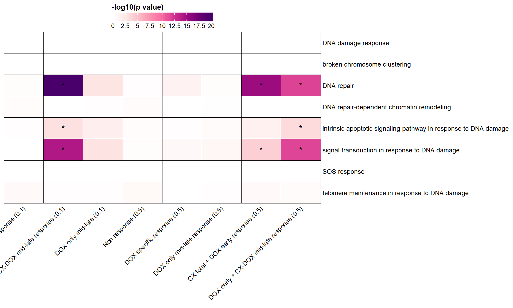
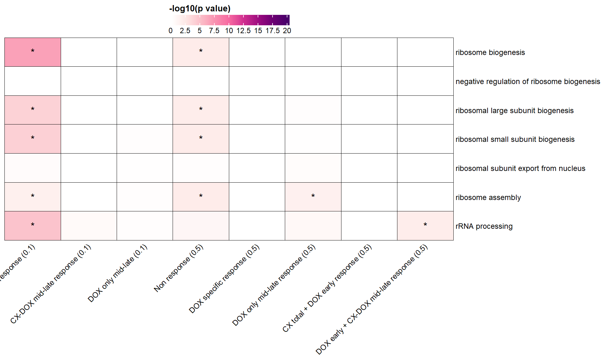
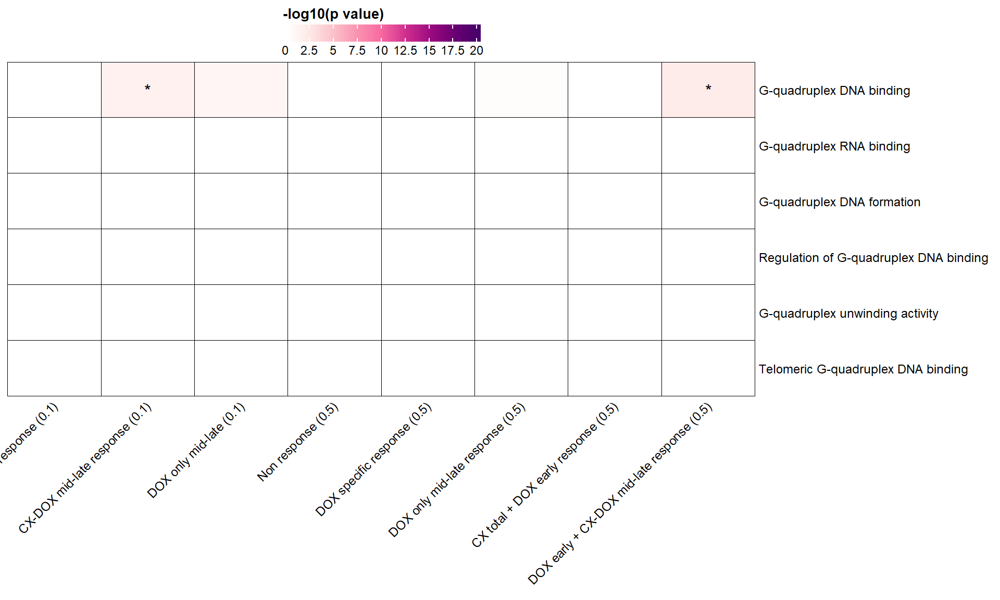
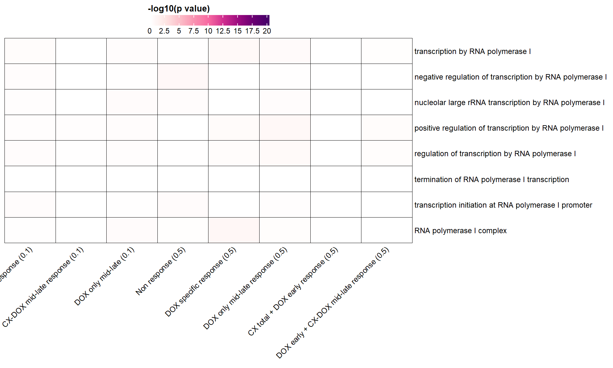

Last updated: 2025-07-03
Checks: 7 0
Knit directory: CX5461_Project/
This reproducible R Markdown analysis was created with workflowr (version 1.7.1). The Checks tab describes the reproducibility checks that were applied when the results were created. The Past versions tab lists the development history.
Great! Since the R Markdown file has been committed to the Git repository, you know the exact version of the code that produced these results.
Great job! The global environment was empty. Objects defined in the global environment can affect the analysis in your R Markdown file in unknown ways. For reproduciblity it’s best to always run the code in an empty environment.
The command set.seed(20250129) was run prior to running
the code in the R Markdown file. Setting a seed ensures that any results
that rely on randomness, e.g. subsampling or permutations, are
reproducible.
Great job! Recording the operating system, R version, and package versions is critical for reproducibility.
Nice! There were no cached chunks for this analysis, so you can be confident that you successfully produced the results during this run.
Great job! Using relative paths to the files within your workflowr project makes it easier to run your code on other machines.
Great! You are using Git for version control. Tracking code development and connecting the code version to the results is critical for reproducibility.
The results in this page were generated with repository version 98c5469. See the Past versions tab to see a history of the changes made to the R Markdown and HTML files.
Note that you need to be careful to ensure that all relevant files for
the analysis have been committed to Git prior to generating the results
(you can use wflow_publish or
wflow_git_commit). workflowr only checks the R Markdown
file, but you know if there are other scripts or data files that it
depends on. Below is the status of the Git repository when the results
were generated:
Ignored files:
Ignored: .RData
Ignored: .Rhistory
Ignored: .Rproj.user/
Ignored: 0.1 box.svg
Ignored: Rplot04.svg
Untracked files:
Untracked: 0.1 density.svg
Untracked: 0.1.emf
Untracked: 0.1.svg
Untracked: 0.5 box.svg
Untracked: 0.5 density.svg
Untracked: 0.5.svg
Untracked: Additional/
Untracked: Autosome factors.svg
Untracked: CX_5461_Pattern_Genes_24hr.csv
Untracked: CX_5461_Pattern_Genes_3hr.csv
Untracked: Cell viability box plot.svg
Untracked: DEG GO terms.svg
Untracked: DNA damage associated GO terms.svg
Untracked: DRC1.svg
Untracked: Figure 1.jpeg
Untracked: Figure 1.pdf
Untracked: Figure_CM_Purity.pdf
Untracked: G Quadruplex DEGs.svg
Untracked: PC2 Vs PC3 Autosome.svg
Untracked: PCA autosome.svg
Untracked: Rplot 18.svg
Untracked: Rplot.svg
Untracked: Rplot01.svg
Untracked: Rplot02.svg
Untracked: Rplot03.svg
Untracked: Rplot05.svg
Untracked: Rplot06.svg
Untracked: Rplot07.svg
Untracked: Rplot08.jpeg
Untracked: Rplot08.svg
Untracked: Rplot09.svg
Untracked: Rplot10.svg
Untracked: Rplot11.svg
Untracked: Rplot12.svg
Untracked: Rplot13.svg
Untracked: Rplot14.svg
Untracked: Rplot15.svg
Untracked: Rplot16.svg
Untracked: Rplot17.svg
Untracked: Rplot18.svg
Untracked: Rplot19.svg
Untracked: Rplot20.svg
Untracked: Rplot21.svg
Untracked: Rplot22.svg
Untracked: Rplot23.svg
Untracked: Rplot24.svg
Untracked: S15.pdf
Untracked: TOP2B.bed
Untracked: TS HPA (Violin).svg
Untracked: TS HPA.svg
Untracked: TS_HA.svg
Untracked: TS_HV.svg
Untracked: Violin HA.svg
Untracked: Violin HV (CX vs DOX).svg
Untracked: Violin HV.svg
Untracked: data/AF.csv
Untracked: data/AF_Mapped.csv
Untracked: data/AF_genes.csv
Untracked: data/Annotated_DOX_Gene_Table.csv
Untracked: data/BP/
Untracked: data/CAD_genes.csv
Untracked: data/Cardiotox.csv
Untracked: data/Cardiotox_mapped.csv
Untracked: data/Col_DEG_proportion_data.csv
Untracked: data/Col_DEGs.csv
Untracked: data/Corrmotif_GO/
Untracked: data/DOX_Vald.csv
Untracked: data/DOX_Vald_Mapped.csv
Untracked: data/DOX_alt.csv
Untracked: data/Entrez_Cardiotox.csv
Untracked: data/Entrez_Cardiotox_Mapped.csv
Untracked: data/GWAS.xlsx
Untracked: data/GWAS_SNPs.bed
Untracked: data/HF.csv
Untracked: data/HF_Mapped.csv
Untracked: data/HF_genes.csv
Untracked: data/Hypertension_genes.csv
Untracked: data/MI_genes.csv
Untracked: data/P53_Target_mapped.csv
Untracked: data/Sample_annotated.csv
Untracked: data/Samples.csv
Untracked: data/Samples.xlsx
Untracked: data/TOP2A.bed
Untracked: data/TOP2A_target.csv
Untracked: data/TOP2A_target_lit.csv
Untracked: data/TOP2A_target_lit_mapped.csv
Untracked: data/TOP2A_target_mapped.csv
Untracked: data/TOP2B.bed
Untracked: data/TOP2B_target.csv
Untracked: data/TOP2B_target_heatmap.csv
Untracked: data/TOP2B_target_heatmap_mapped.csv
Untracked: data/TOP2B_target_mapped.csv
Untracked: data/TS.csv
Untracked: data/TS_HPA.csv
Untracked: data/TS_HPA_mapped.csv
Untracked: data/Toptable_CX_0.1_24.csv
Untracked: data/Toptable_CX_0.1_3.csv
Untracked: data/Toptable_CX_0.1_48.csv
Untracked: data/Toptable_CX_0.5_24.csv
Untracked: data/Toptable_CX_0.5_3.csv
Untracked: data/Toptable_CX_0.5_48.csv
Untracked: data/Toptable_DOX_0.1_24.csv
Untracked: data/Toptable_DOX_0.1_3.csv
Untracked: data/Toptable_DOX_0.1_48.csv
Untracked: data/Toptable_DOX_0.5_24.csv
Untracked: data/Toptable_DOX_0.5_3.csv
Untracked: data/Toptable_DOX_0.5_48.csv
Untracked: data/count.tsv
Untracked: data/heatmap.csv
Untracked: data/ts_data_mapped
Untracked: results/
Untracked: run_bedtools.bat
Unstaged changes:
Deleted: analysis/Actox.Rmd
Modified: analysis/_site.yml
Modified: data/DEGs/Toptable_DOX_0.5_3.csv
Modified: data/DOX_0.5_48 (Combined).csv
Modified: data/Total_number_of_Mapped_reads_by_Individuals.csv
Note that any generated files, e.g. HTML, png, CSS, etc., are not included in this status report because it is ok for generated content to have uncommitted changes.
These are the previous versions of the repository in which changes were
made to the R Markdown (analysis/DDR_Gquad_Corr.Rmd) and
HTML (docs/DDR_Gquad_Corr.html) files. If you’ve configured
a remote Git repository (see ?wflow_git_remote), click on
the hyperlinks in the table below to view the files as they were in that
past version.
| File | Version | Author | Date | Message |
|---|---|---|---|---|
| html | 75100b0 | sayanpaul01 | 2025-06-03 | Commit |
| html | 2fdef0f | sayanpaul01 | 2025-06-03 | Commit |
| Rmd | fce174d | sayanpaul01 | 2025-06-03 | Commit |
| html | fce174d | sayanpaul01 | 2025-06-03 | Commit |
| Rmd | af36d28 | sayanpaul01 | 2025-06-01 | Commit |
| html | af36d28 | sayanpaul01 | 2025-06-01 | Commit |
library(tidyverse)
library(data.table)
library(ComplexHeatmap)
library(circlize)
library(grid)
### 📁 Define CorMotif GO Enrichment Files
go_files <- list(
"Non response (0.1)" = "data/BP/CorMotif_Terms/GO_BP_Non_response_(0.1).csv",
"CX-DOX mid-late response (0.1)" = "data/BP/CorMotif_Terms/GO_BP_CX-DOX_mid-late_response_(0.1).csv",
"DOX only mid-late (0.1)" = "data/BP/CorMotif_Terms/GO_BP_DOX_only_mid-late_(0.1).csv",
"Non response (0.5)" = "data/BP/CorMotif_Terms/GO_BP_Non_response_(0.5).csv",
"DOX specific response (0.5)" = "data/BP/CorMotif_Terms/GO_BP_DOX_specific_response_(0.5).csv",
"DOX only mid-late response (0.5)" = "data/BP/CorMotif_Terms/GO_BP_DOX_only_mid-late_response_(0.5).csv",
"CX total + DOX early response (0.5)" = "data/BP/CorMotif_Terms/GO_BP_CX_total_+_DOX_early_response_(0.5).csv",
"DOX early + CX-DOX mid-late response (0.5)" = "data/BP/CorMotif_Terms/GO_BP_DOX_early_+_CX-DOX_mid-late_response_(0.5).csv"
)
### 🧬 Define GO parent terms and map their children
parent_terms <- list(
"GO:0006974" = "DNA damage response",
"GO:0141112" = "broken chromosome clustering",
"GO:0006281" = "DNA repair",
"GO:0140861" = "DNA repair-dependent chromatin remodeling",
"GO:0008630" = "intrinsic apoptotic signaling pathway in response to DNA damage",
"GO:0042770" = "signal transduction in response to DNA damage",
"GO:0009432" = "SOS response",
"GO:0043247" = "telomere maintenance in response to DNA damage"
)
child_map <- list(
"GO:0006281" = c("GO:0006284", "GO:0006307", "GO:0006302", "GO:0006298", "GO:0043504",
"GO:0006289", "GO:0006301", "GO:0006290", "GO:0000725", "GO:0000012"),
"GO:0008630" = c("GO:0042771", "GO:1902230", "GO:1902231", "GO:1902229"),
"GO:0042770" = c("GO:0000077", "GO:0030330", "GO:0042772", "GO:0044773",
"GO:2000002", "GO:2000003", "GO:2000001"),
"GO:0043247" = c("GO:1904506", "GO:1904507", "GO:0031848", "GO:1904505", "GO:0097698")
)
ddr_descriptions <- unname(unlist(parent_terms))
### 🔁 Step 1: Extract best p-values from GO enrichment results
go_matrix_df <- map_dfr(names(go_files), function(cond) {
file <- go_files[[cond]]
df <- tryCatch(fread(file), error = function(e) return(data.table()))
if (nrow(df) == 0 || !all(c("ID", "Description", "pvalue", "p.adjust") %in% colnames(df))) {
message("⚠️ Skipping or padding malformed file: ", cond)
return(tibble(Description = ddr_descriptions, pvalue = NA, p.adjust = NA, log10p = NA, Condition = cond))
}
df <- as_tibble(df) %>% dplyr::select(ID, Description, pvalue, p.adjust)
results <- lapply(names(parent_terms), function(parent_id) {
all_ids <- c(parent_id, child_map[[parent_id]])
df_sub <- df %>% filter(ID %in% all_ids)
if (nrow(df_sub) == 0) {
tibble(Description = parent_terms[[parent_id]], pvalue = NA, p.adjust = NA, log10p = NA, Condition = cond)
} else {
best_row <- df_sub %>% slice_min(pvalue, n = 1)
tibble(Description = parent_terms[[parent_id]],
pvalue = best_row$pvalue,
p.adjust = best_row$p.adjust,
log10p = -log10(best_row$pvalue),
Condition = cond)
}
})
bind_rows(results)
})
### 🧱 Step 2: Construct log10(p) and raw p-value matrices
heatmap_data <- go_matrix_df %>%
dplyr::select(Description, Condition, log10p) %>%
tidyr::pivot_wider(names_from = Condition, values_from = log10p) %>%
tibble::column_to_rownames("Description") %>%
as.matrix()
pval_matrix <- go_matrix_df %>%
dplyr::select(Description, Condition, pvalue) %>%
tidyr::pivot_wider(names_from = Condition, values_from = pvalue) %>%
tibble::column_to_rownames("Description") %>%
as.matrix()
p_adj_matrix <- go_matrix_df %>%
dplyr::select(Description, Condition, p.adjust) %>%
tidyr::pivot_wider(names_from = Condition, values_from = p.adjust) %>%
tibble::column_to_rownames("Description") %>%
as.matrix()
### ✅ Step 3: Pad missing columns
all_conditions <- names(go_files)
missing_cols <- setdiff(all_conditions, colnames(heatmap_data))
if (length(missing_cols) > 0) {
for (cond in missing_cols) {
heatmap_data[, cond] <- NA
pval_matrix[, cond] <- NA
}
heatmap_data <- heatmap_data[, all_conditions]
pval_matrix <- pval_matrix[, all_conditions]
}
### 🎨 Step 4: Define color palette
breaks <- seq(0, 20, by = 2.5)
palette <- colorRampPalette(c("white", "#fde0dd", "#fa9fb5", "#f768a1", "#c51b8a", "#7a0177", "#49006a"))(length(breaks))
col_fun <- colorRamp2(breaks, palette)
### 🔥 Step 5: Plot heatmap with stars for p.adjust < 0.05
ht <- Heatmap(
heatmap_data,
name = "-log10(p)",
col = col_fun,
na_col = "white",
rect_gp = gpar(col = "black", lwd = 0.5),
cluster_rows = FALSE,
cluster_columns = FALSE,
row_names_gp = gpar(fontsize = 9),
column_names_gp = gpar(fontsize = 9),
column_names_rot = 45,
row_names_max_width = max_text_width(rownames(heatmap_data), gp = gpar(fontsize = 9)),
cell_fun = function(j, i, x, y, width, height, fill) {
adj_p <- p_adj_matrix[i, j] # Use p.adjust matrix for significance check
if (!is.na(adj_p) && adj_p < 0.05) {
grid.text("*", x, y, gp = gpar(fontsize = 12))
}
},
heatmap_legend_param = list(
title = "-log10(p value)",
at = breaks,
labels = as.character(breaks),
legend_width = unit(5, "cm"),
direction = "horizontal",
title_gp = gpar(fontsize = 10, fontface = "bold"),
labels_gp = gpar(fontsize = 9)
)
)
### 🖼 Final Draw
draw(ht, heatmap_legend_side = "top")
library(tidyverse)
library(data.table)
library(ComplexHeatmap)
library(circlize)
library(grid)
### 📁 Define CorMotif GO Enrichment Files
go_files <- list(
"Non response (0.1)" = "data/BP/CorMotif_Terms/GO_BP_Non_response_(0.1).csv",
"CX-DOX mid-late response (0.1)" = "data/BP/CorMotif_Terms/GO_BP_CX-DOX_mid-late_response_(0.1).csv",
"DOX only mid-late (0.1)" = "data/BP/CorMotif_Terms/GO_BP_DOX_only_mid-late_(0.1).csv",
"Non response (0.5)" = "data/BP/CorMotif_Terms/GO_BP_Non_response_(0.5).csv",
"DOX specific response (0.5)" = "data/BP/CorMotif_Terms/GO_BP_DOX_specific_response_(0.5).csv",
"DOX only mid-late response (0.5)" = "data/BP/CorMotif_Terms/GO_BP_DOX_only_mid-late_response_(0.5).csv",
"CX total + DOX early response (0.5)" = "data/BP/CorMotif_Terms/GO_BP_CX_total_+_DOX_early_response_(0.5).csv",
"DOX early + CX-DOX mid-late response (0.5)" = "data/BP/CorMotif_Terms/GO_BP_DOX_early_+_CX-DOX_mid-late_response_(0.5).csv"
)
### 🧬 Ribosome Biogenesis GO Terms
parent_terms <- list(
"GO:0042254" = "ribosome biogenesis",
"GO:0090071" = "negative regulation of ribosome biogenesis",
"GO:0042273" = "ribosomal large subunit biogenesis",
"GO:0042274" = "ribosomal small subunit biogenesis",
"GO:0000054" = "ribosomal subunit export from nucleus",
"GO:0042255" = "ribosome assembly",
"GO:0006364" = "rRNA processing"
)
child_map <- list(
"GO:0090071" = c("GO:2000201", "GO:2000233"),
"GO:0042273" = c("GO:0000470", "GO:0000027"),
"GO:0042274" = c("GO:0030490", "GO:0000028", "GO:0140638"),
"GO:0000054" = c("GO:2000201", "GO:2000202", "GO:2000200", "GO:0000055", "GO:0000056"),
"GO:0042255" = c("GO:0042256", "GO:0061668", "GO:0000027", "GO:0000028"),
"GO:0006364" = c(
"GO:1901259", "GO:0000450", "GO:0000483", "GO:0002103", "GO:0000479", "GO:0000449",
"GO:0000475", "GO:0000476", "GO:0000460", "GO:0000481", "GO:0000470", "GO:0030490",
"GO:2000233", "GO:2000234", "GO:2000232", "GO:0031125", "GO:0000967", "GO:0000154", "GO:1990417"
)
)
rbio_descriptions <- unname(unlist(parent_terms))
### 🔁 Step 1: Extract best p-values from GO enrichment results
go_matrix_df <- purrr::map_dfr(names(go_files), function(cond) {
file <- go_files[[cond]]
df <- tryCatch(fread(file), error = function(e) return(data.table()))
if (nrow(df) == 0 || !all(c("ID", "Description", "pvalue", "p.adjust") %in% colnames(df))) {
message("⚠️ Skipping or padding malformed file: ", cond)
return(tibble(Description = rbio_descriptions, pvalue = NA, p.adjust = NA, log10p = NA, Condition = cond))
}
df <- as_tibble(df) %>% dplyr::select(ID, Description, pvalue, p.adjust)
results <- lapply(names(parent_terms), function(parent_id) {
all_ids <- c(parent_id, child_map[[parent_id]])
df_sub <- df %>% dplyr::filter(ID %in% all_ids)
if (nrow(df_sub) == 0) {
tibble(Description = parent_terms[[parent_id]], pvalue = NA, p.adjust = NA, log10p = NA, Condition = cond)
} else {
best_row <- df_sub %>% dplyr::slice_min(pvalue, n = 1)
tibble(
Description = parent_terms[[parent_id]],
pvalue = best_row$pvalue,
p.adjust = best_row$p.adjust,
log10p = -log10(best_row$pvalue),
Condition = cond
)
}
})
bind_rows(results)
})
### 🧱 Step 2: Construct log10(p) and raw p-value matrices
heatmap_data <- go_matrix_df %>%
dplyr::select(Description, Condition, log10p) %>%
tidyr::pivot_wider(names_from = Condition, values_from = log10p) %>%
tibble::column_to_rownames("Description") %>%
as.matrix()
pval_matrix <- go_matrix_df %>%
dplyr::select(Description, Condition, pvalue) %>%
tidyr::pivot_wider(names_from = Condition, values_from = pvalue) %>%
tibble::column_to_rownames("Description") %>%
as.matrix()
p_adj_matrix <- go_matrix_df %>%
dplyr::select(Description, Condition, p.adjust) %>%
tidyr::pivot_wider(names_from = Condition, values_from = p.adjust) %>%
tibble::column_to_rownames("Description") %>%
as.matrix()
### ✅ Step 3: Pad missing columns
all_conditions <- names(go_files)
missing_cols <- setdiff(all_conditions, colnames(heatmap_data))
if (length(missing_cols) > 0) {
for (cond in missing_cols) {
heatmap_data[, cond] <- NA
pval_matrix[, cond] <- NA
}
heatmap_data <- heatmap_data[, all_conditions]
pval_matrix <- pval_matrix[, all_conditions]
}
### 🎨 Step 4: Define color palette
breaks <- seq(0, 20, by = 2.5)
palette <- colorRampPalette(c("white", "#fde0dd", "#fa9fb5", "#f768a1", "#c51b8a", "#7a0177", "#49006a"))(length(breaks))
col_fun <- colorRamp2(breaks, palette)
### 🔥 Step 5: Plot heatmap with stars for p.adjust < 0.05
ht <- Heatmap(
heatmap_data,
name = "-log10(p)",
col = col_fun,
na_col = "white",
rect_gp = gpar(col = "black", lwd = 0.5),
cluster_rows = FALSE,
cluster_columns = FALSE,
row_names_gp = gpar(fontsize = 9),
column_names_gp = gpar(fontsize = 9),
column_names_rot = 45,
row_names_max_width = max_text_width(rownames(heatmap_data), gp = gpar(fontsize = 9)),
cell_fun = function(j, i, x, y, width, height, fill) {
adj_p <- p_adj_matrix[i, j] # Use p.adjust matrix for significance check
if (!is.na(adj_p) && adj_p < 0.05) {
grid.text("*", x, y, gp = gpar(fontsize = 12))
}
},
heatmap_legend_param = list(
title = "-log10(p value)",
at = breaks,
labels = as.character(breaks),
legend_width = unit(5, "cm"),
direction = "horizontal",
title_gp = gpar(fontsize = 10, fontface = "bold"),
labels_gp = gpar(fontsize = 9)
)
)
### 🖼 Final Draw
draw(ht, heatmap_legend_side = "top")
### 📦 Load Required Libraries
# 📦 Load Required Libraries
library(tidyverse)
library(data.table)
library(ComplexHeatmap)
library(circlize)
library(grid)
# 📁 Define GO Enrichment Files
go_files <- list(
"Non response (0.1)" = "data/BP/CorMotif_Terms_Combined/GO_All_Non_response_(0.1).csv",
"CX-DOX mid-late response (0.1)" = "data/BP/CorMotif_Terms_Combined/GO_All_CX-DOX_mid-late_response_(0.1).csv",
"DOX only mid-late (0.1)" = "data/BP/CorMotif_Terms_Combined/GO_All_DOX_only_mid-late_(0.1).csv",
"Non response (0.5)" = "data/BP/CorMotif_Terms_Combined/GO_All_Non_response_(0.5).csv",
"DOX specific response (0.5)" = "data/BP/CorMotif_Terms_Combined/GO_All_DOX_specific_response_(0.5).csv",
"DOX only mid-late response (0.5)" = "data/BP/CorMotif_Terms_Combined/GO_All_DOX_only_mid-late_response_(0.5).csv",
"CX total + DOX early response (0.5)" = "data/BP/CorMotif_Terms_Combined/GO_All_CX_total_+_DOX_early_response_(0.5).csv",
"DOX early + CX-DOX mid-late response (0.5)" = "data/BP/CorMotif_Terms_Combined/GO_All_DOX_early_+_CX-DOX_mid-late_response_(0.5).csv"
)
# 🧬 G4-Related GO Terms
g4_terms <- list(
"GO:0051880" = "G-quadruplex DNA binding",
"GO:0002151" = "G-quadruplex RNA binding",
"GO:0071919" = "G-quadruplex DNA formation",
"GO:1905493" = "Regulation of G-quadruplex DNA binding",
"GO:0160225" = "G-quadruplex unwinding activity",
"GO:0061849" = "Telomeric G-quadruplex DNA binding"
)
g4_descriptions <- unname(unlist(g4_terms))
# 🔁 Step 1: Extract best p-values and p.adjust values
go_matrix_df <- purrr::map_dfr(names(go_files), function(cond) {
file <- go_files[[cond]]
df <- tryCatch(fread(file), error = function(e) return(data.table()))
if (nrow(df) == 0 || !all(c("ID", "Description", "pvalue", "p.adjust") %in% colnames(df))) {
message("⚠️ Skipping or padding malformed file: ", cond)
return(tibble(Description = g4_descriptions, pvalue = NA, padj = NA, log10p = NA, Condition = cond))
}
df <- as_tibble(df) %>% dplyr::select(ID, Description, pvalue, p.adjust)
results <- lapply(names(g4_terms), function(go_id) {
df_sub <- df %>% dplyr::filter(ID == go_id)
if (nrow(df_sub) == 0) {
tibble(Description = g4_terms[[go_id]], pvalue = NA, padj = NA, log10p = NA, Condition = cond)
} else {
best_row <- df_sub %>% dplyr::slice_min(pvalue, n = 1)
tibble(
Description = g4_terms[[go_id]],
pvalue = best_row$pvalue,
padj = best_row$p.adjust,
log10p = -log10(best_row$pvalue),
Condition = cond
)
}
})
bind_rows(results)
})
# 🧱 Step 2: Create heatmap and p-value matrices
heatmap_data <- go_matrix_df %>%
dplyr::select(Description, Condition, log10p) %>%
tidyr::pivot_wider(names_from = Condition, values_from = log10p) %>%
tibble::column_to_rownames("Description") %>%
as.matrix()
pval_matrix <- go_matrix_df %>%
dplyr::select(Description, Condition, pvalue) %>%
tidyr::pivot_wider(names_from = Condition, values_from = pvalue) %>%
tibble::column_to_rownames("Description") %>%
as.matrix()
padj_matrix <- go_matrix_df %>%
dplyr::select(Description, Condition, padj) %>%
tidyr::pivot_wider(names_from = Condition, values_from = padj) %>%
tibble::column_to_rownames("Description") %>%
as.matrix()
# ✅ Step 3: Pad missing columns
all_conditions <- names(go_files)
missing_cols <- setdiff(all_conditions, colnames(heatmap_data))
if (length(missing_cols) > 0) {
for (cond in missing_cols) {
heatmap_data[, cond] <- NA
pval_matrix[, cond] <- NA
padj_matrix[, cond] <- NA
}
heatmap_data <- heatmap_data[, all_conditions]
pval_matrix <- pval_matrix[, all_conditions]
padj_matrix <- padj_matrix[, all_conditions]
}
# 🎨 Step 4: Color palette
breaks <- seq(0, 20, by = 2.5)
palette <- colorRampPalette(c("white", "#fde0dd", "#fa9fb5", "#f768a1", "#c51b8a", "#7a0177", "#49006a"))(length(breaks))
col_fun <- colorRamp2(breaks, palette)
# 🔥 Step 5: Plot heatmap
ht <- Heatmap(
heatmap_data,
name = "-log10(p)",
col = col_fun,
na_col = "white",
rect_gp = gpar(col = "black", lwd = 0.5),
cluster_rows = FALSE,
cluster_columns = FALSE,
row_names_gp = gpar(fontsize = 9),
column_names_gp = gpar(fontsize = 9),
column_names_rot = 45,
row_names_max_width = max_text_width(rownames(heatmap_data), gp = gpar(fontsize = 9)),
cell_fun = function(j, i, x, y, width, height, fill) {
raw_padj <- padj_matrix[i, j]
if (!is.na(raw_padj) && raw_padj < 0.05) {
grid.text("*", x, y, gp = gpar(fontsize = 12))
}
},
heatmap_legend_param = list(
title = "-log10(p value)",
at = breaks,
labels = as.character(breaks),
legend_width = unit(5, "cm"),
direction = "horizontal",
title_gp = gpar(fontsize = 10, fontface = "bold"),
labels_gp = gpar(fontsize = 9)
)
)
# 🖼 Final Draw
draw(ht, heatmap_legend_side = "top")
### 📦 Load Required Libraries
library(tidyverse)
library(data.table)
library(ComplexHeatmap)
library(circlize)
library(grid)
### 📁 Define GO Enrichment Files
go_files <- list(
"Non response (0.1)" = "data/BP/CorMotif_Terms_Combined/GO_All_Non_response_(0.1).csv",
"CX-DOX mid-late response (0.1)" = "data/BP/CorMotif_Terms_Combined/GO_All_CX-DOX_mid-late_response_(0.1).csv",
"DOX only mid-late (0.1)" = "data/BP/CorMotif_Terms_Combined/GO_All_DOX_only_mid-late_(0.1).csv",
"Non response (0.5)" = "data/BP/CorMotif_Terms_Combined/GO_All_Non_response_(0.5).csv",
"DOX specific response (0.5)" = "data/BP/CorMotif_Terms_Combined/GO_All_DOX_specific_response_(0.5).csv",
"DOX only mid-late response (0.5)" = "data/BP/CorMotif_Terms_Combined/GO_All_DOX_only_mid-late_response_(0.5).csv",
"CX total + DOX early response (0.5)" = "data/BP/CorMotif_Terms_Combined/GO_All_CX_total_+_DOX_early_response_(0.5).csv",
"DOX early + CX-DOX mid-late response (0.5)" = "data/BP/CorMotif_Terms_Combined/GO_All_DOX_early_+_CX-DOX_mid-late_response_(0.5).csv"
)
### 🔧 Parent GO Terms and their Children
parent_terms <- list(
"GO:0006360" = "transcription by RNA polymerase I",
"GO:0016479" = "negative regulation of transcription by RNA polymerase I",
"GO:0042790" = "nucleolar large rRNA transcription by RNA polymerase I",
"GO:0045943" = "positive regulation of transcription by RNA polymerase I",
"GO:0006356" = "regulation of transcription by RNA polymerase I",
"GO:0006363" = "termination of RNA polymerase I transcription",
"GO:0006361" = "transcription initiation at RNA polymerase I promoter",
"GO:0005736" = "RNA polymerase I complex"
)
rnapolI_descriptions <- unname(unlist(parent_terms))
### 🔁 Step 1: Extract best p-values
go_matrix_df <- purrr::map_dfr(names(go_files), function(cond) {
file <- go_files[[cond]]
df <- tryCatch(fread(file), error = function(e) return(data.table()))
if (nrow(df) == 0 || !all(c("ID", "Description", "pvalue", "p.adjust") %in% colnames(df))) {
message("⚠️ Skipping or padding malformed file: ", cond)
return(tibble(Description = rnapolI_descriptions, pvalue = NA, padj = NA, log10p = NA, Condition = cond))
}
df <- as_tibble(df) %>% dplyr::select(ID, Description, pvalue, p.adjust)
results <- lapply(names(parent_terms), function(go_id) {
df_sub <- df %>% dplyr::filter(ID == go_id)
if (nrow(df_sub) == 0) {
tibble(Description = parent_terms[[go_id]], pvalue = NA, padj = NA, log10p = NA, Condition = cond)
} else {
best_row <- df_sub %>% dplyr::slice_min(pvalue, n = 1)
tibble(
Description = parent_terms[[go_id]],
pvalue = best_row$pvalue,
padj = best_row$p.adjust,
log10p = -log10(best_row$pvalue),
Condition = cond
)
}
})
bind_rows(results)
})
### 🧱 Step 2: Create heatmap and p-value matrices
heatmap_data <- go_matrix_df %>%
dplyr::select(Description, Condition, log10p) %>%
tidyr::pivot_wider(names_from = Condition, values_from = log10p) %>%
tibble::column_to_rownames("Description") %>%
as.matrix()
padj_matrix <- go_matrix_df %>%
dplyr::select(Description, Condition, padj) %>%
tidyr::pivot_wider(names_from = Condition, values_from = padj) %>%
tibble::column_to_rownames("Description") %>%
as.matrix()
### ✅ Step 3: Pad missing columns
all_conditions <- names(go_files)
missing_cols <- setdiff(all_conditions, colnames(heatmap_data))
if (length(missing_cols) > 0) {
for (cond in missing_cols) {
heatmap_data[, cond] <- NA
padj_matrix[, cond] <- NA
}
heatmap_data <- heatmap_data[, all_conditions]
padj_matrix <- padj_matrix[, all_conditions]
}
### 🎨 Step 4: Color palette
breaks <- seq(0, 20, by = 2.5)
palette <- colorRampPalette(c("white", "#fde0dd", "#fa9fb5", "#f768a1", "#c51b8a", "#7a0177", "#49006a"))(length(breaks))
col_fun <- colorRamp2(breaks, palette)
### 🔥 Step 5: Plot heatmap
ht <- Heatmap(
heatmap_data,
name = "-log10(p)",
col = col_fun,
na_col = "white",
rect_gp = gpar(col = "black", lwd = 0.5),
cluster_rows = FALSE,
cluster_columns = FALSE,
row_names_gp = gpar(fontsize = 9),
column_names_gp = gpar(fontsize = 9),
column_names_rot = 45,
row_names_max_width = max_text_width(rownames(heatmap_data), gp = gpar(fontsize = 9)),
cell_fun = function(j, i, x, y, width, height, fill) {
adj_p <- padj_matrix[i, j]
if (!is.na(adj_p) && adj_p < 0.05) {
grid.text("*", x, y, gp = gpar(fontsize = 12))
}
},
heatmap_legend_param = list(
title = "-log10(p value)",
at = breaks,
labels = as.character(breaks),
legend_width = unit(5, "cm"),
direction = "horizontal",
title_gp = gpar(fontsize = 10, fontface = "bold"),
labels_gp = gpar(fontsize = 9)
)
)
### 🖼 Final Draw
draw(ht, heatmap_legend_side = "top")
| Version | Author | Date |
|---|---|---|
| af36d28 | sayanpaul01 | 2025-06-01 |
sessionInfo()R version 4.3.0 (2023-04-21 ucrt)
Platform: x86_64-w64-mingw32/x64 (64-bit)
Running under: Windows 11 x64 (build 26100)
Matrix products: default
locale:
[1] LC_COLLATE=English_United States.utf8
[2] LC_CTYPE=English_United States.utf8
[3] LC_MONETARY=English_United States.utf8
[4] LC_NUMERIC=C
[5] LC_TIME=English_United States.utf8
time zone: America/Chicago
tzcode source: internal
attached base packages:
[1] grid stats graphics grDevices utils datasets methods
[8] base
other attached packages:
[1] circlize_0.4.16 ComplexHeatmap_2.18.0 data.table_1.17.0
[4] lubridate_1.9.4 forcats_1.0.0 stringr_1.5.1
[7] dplyr_1.1.4 purrr_1.0.4 readr_2.1.5
[10] tidyr_1.3.1 tibble_3.2.1 ggplot2_3.5.2
[13] tidyverse_2.0.0 workflowr_1.7.1
loaded via a namespace (and not attached):
[1] shape_1.4.6.1 gtable_0.3.6 rjson_0.2.23
[4] xfun_0.52 bslib_0.9.0 GlobalOptions_0.1.2
[7] processx_3.8.6 callr_3.7.6 tzdb_0.5.0
[10] Cairo_1.6-2 vctrs_0.6.5 tools_4.3.0
[13] ps_1.8.1 generics_0.1.3 stats4_4.3.0
[16] parallel_4.3.0 cluster_2.1.8.1 pkgconfig_2.0.3
[19] RColorBrewer_1.1-3 S4Vectors_0.40.2 lifecycle_1.0.4
[22] compiler_4.3.0 git2r_0.36.2 munsell_0.5.1
[25] getPass_0.2-4 codetools_0.2-20 clue_0.3-66
[28] httpuv_1.6.15 htmltools_0.5.8.1 sass_0.4.10
[31] yaml_2.3.10 later_1.3.2 pillar_1.10.2
[34] crayon_1.5.3 jquerylib_0.1.4 whisker_0.4.1
[37] cachem_1.1.0 magick_2.8.6 iterators_1.0.14
[40] foreach_1.5.2 tidyselect_1.2.1 digest_0.6.34
[43] stringi_1.8.3 rprojroot_2.0.4 fastmap_1.2.0
[46] colorspace_2.1-0 cli_3.6.1 magrittr_2.0.3
[49] withr_3.0.2 scales_1.3.0 promises_1.3.2
[52] timechange_0.3.0 rmarkdown_2.29 httr_1.4.7
[55] matrixStats_1.5.0 png_0.1-8 GetoptLong_1.0.5
[58] hms_1.1.3 evaluate_1.0.3 knitr_1.50
[61] IRanges_2.36.0 doParallel_1.0.17 rlang_1.1.3
[64] Rcpp_1.0.12 glue_1.7.0 BiocGenerics_0.48.1
[67] rstudioapi_0.17.1 jsonlite_2.0.0 R6_2.6.1
[70] fs_1.6.3